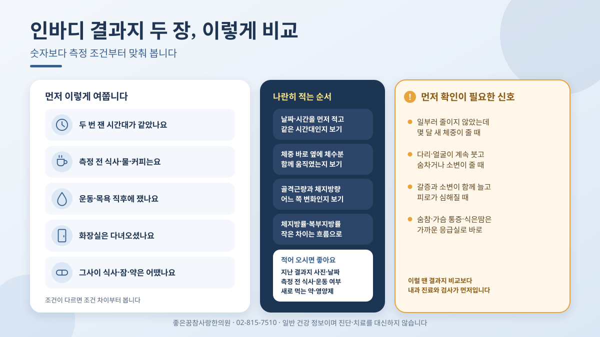

이종호 한의사 감수좋은꿈참사랑한의원 대표원장 (한의사 면허번호 19769)발행 2026-11-25 · 수정 2026-11-25
이 글의 차례
인바디 결과지 두 장을 나란히 놓으면 가장 먼저 체중 칸으로 눈이 가지만, 비교의 출발점은 숫자가 아니라 두 번의 측정 조건입니다. 아침 공복에 잰 결과와 저녁 식사 뒤에 잰 결과는 같은 사람, 같은 주에 재도 체중과 체수분이 꽤 다르게 나올 수 있기 때문입니다.
그래서 진료실에서는 측정 시간대, 식사와 물 섭취, 운동이나 목욕 여부, 화장실을 다녀왔는지부터 확인하고, 그다음 체중·골격근량·체지방량·체지방률·체수분을 같은 순서로 나란히 적어 봅니다.
이 글에 나오는 숫자는 모두 설명을 위해 지어낸 가상 예시이며, 실제 결과는 사람마다 다르고 해석은 진료에서 함께 합니다.
왜 측정 조건부터 맞춰 봐야 할까요
- 인바디 770 같은 체성분 분석기는 몸에 아주 약한 전류를 흘려 보내 몸속 수분이 전기를 얼마나 잘 통하게 하는지를 바탕으로 근육과 지방의 양을 계산합니다. 그래서 몸속 수분의 양과 분포가 달라지면 같은 몸이라도 계산된 숫자가 조금씩 달라질 수 있습니다.
- 식사를 하거나 물을 많이 마신 직후에는 그 무게가 체중에 그대로 더해지고, 위와 장에 있는 음식과 수분도 측정값에 영향을 줄 수 있습니다.
- 운동이나 사우나 직후에는 땀으로 수분이 빠지고 근육 쪽으로 혈액이 몰려 있어, 평소와 다른 값이 나오기 쉽습니다.
- 생리 전후처럼 몸이 붓는 시기에는 체수분과 체중이 함께 늘어 보일 수 있습니다.
- 하루 중에도 오래 서 있거나 앉아 있으면 수분이 다리 쪽으로 내려가 아침과 저녁의 분포가 달라집니다.
- 그래서 두 결과지의 차이가 몸의 변화 때문인지, 측정 조건이 달라서 생긴 것인지를 먼저 나눠 보는 것이 비교의 첫 단계입니다.
가상 예시 1: 같은 주에 조건만 다르게 잰 경우
아래는 설명을 위해 지어낸 숫자입니다. 같은 사람이 같은 주에 한 번은 아침 공복에, 한 번은 저녁 식사와 운동 뒤에 쟀다고 가정해 보겠습니다.
- 체중: 아침 공복 68.2kg / 저녁 식사·운동 뒤 69.3kg (1.1kg 차이)
- 체수분: 아침 38.0L / 저녁 38.6L
- 골격근량: 아침 28.4kg / 저녁 28.7kg
- 체지방량: 아침 19.6kg / 저녁 19.9kg
- 체지방률: 아침 28.7% / 저녁 28.7%
이 예시처럼 체중이 1kg 넘게 달라도 체지방률은 거의 같고, 체수분과 골격근량이 함께 조금 올라가 있다면 대부분은 식사와 물, 측정 시간대의 차이로 먼저 생각해 봅니다. 몸이 일주일 사이에 크게 바뀌었다고 보기보다는 '조건이 달랐다'고 기록해 두는 편이 정확합니다.
가상 예시 2: 같은 조건으로 몇 주 간격을 두고 잰 경우
이번에도 지어낸 숫자입니다. 두 번 모두 아침에 일어나 화장실을 다녀온 뒤 식사 전에 쟀고, 그 사이 간격은 6주라고 가정합니다. 어떤 치료의 결과를 보여 드리려는 숫자가 아니라, 같은 조건에서 잰 두 장을 읽는 방법을 보여 드리려는 예시입니다.
- 체중: 첫 측정 72.5kg / 6주 뒤 71.6kg
- 골격근량: 첫 측정 29.1kg / 6주 뒤 29.0kg
- 체지방량: 첫 측정 22.8kg / 6주 뒤 22.0kg
- 체지방률: 첫 측정 31.4% / 6주 뒤 30.7%
조건이 같았다면 이 차이는 조건 탓보다는 그사이 생활의 흐름을 반영했을 가능성이 커집니다. 다만 몇백 그램 안팎의 작은 차이는 그날 몸속 수분 사정으로도 생길 수 있어, 한 번의 숫자에 크게 의미를 두지 않습니다.
그리고 숫자가 어느 쪽으로 움직였든, 그 이유는 결과지만으로 정하지 않고 그사이 식사, 잠, 활동량, 복용한 약을 함께 들으며 살펴봅니다.
먼저 이렇게 여쭙니다
- 두 번 측정한 시간대가 같았는지, 아침인지 저녁인지 여쭙니다.
- 측정 전에 식사나 물, 커피를 드셨는지, 운동이나 목욕을 하셨는지 여쭙니다.
- 측정 직전에 화장실을 다녀오셨는지 여쭙니다.
- 여성이라면 생리 주기 중 어느 시기였는지 여쭙니다.
- 그사이 식사량, 잠, 걷는 양, 일하는 시간에 달라진 것이 있었는지 여쭙니다.
- 새로 드시기 시작했거나 끊은 약, 영양제가 있는지 여쭙니다.
두 결과지를 나란히 놓고 보는 순서
- 맨 위의 측정 날짜와 시간을 먼저 적습니다. 결과지에 시간이 나와 있다면 두 장이 같은 시간대인지 바로 확인할 수 있습니다.
- 체중을 적고, 바로 옆에 체수분을 함께 적습니다. 체중과 체수분이 같이 움직였다면 수분 영향부터 생각해 봅니다.
- 골격근량과 체지방량을 나란히 적습니다. 체중 변화가 둘 중 어느 쪽에서 주로 왔는지 보기 위해서입니다.
- 체지방률을 적습니다. 체중이 비슷해도 체지방률이 달라질 수 있고, 체중이 달라도 체지방률은 비슷할 수 있습니다.
- 마지막으로 부위별 근육과 체수분 균형을 봅니다. 한쪽 팔다리만 유난히 다르게 나왔다면 그날 붓기나 다친 곳이 있었는지 여쭙습니다.

일상에서 먼저 해 볼 수 있는 것
- 다시 잴 계획이라면 첫 측정과 같은 시간대, 같은 조건으로 재는 것이 비교에 가장 도움이 됩니다. 꼭 아침 공복일 필요는 없고, 식사 전이든 식사 뒤 두 시간쯤 지난 때든 하나를 정해 계속 지키면 됩니다.
- 측정 전 두 시간쯤은 든든한 식사를 피하고, 운동과 사우나는 측정 뒤로 미룹니다.
- 금속 장신구와 두꺼운 옷은 벗고, 맨발과 맨손이 전극에 잘 닿게 합니다.
- 결과지는 버리지 말고 한곳에 모아 두세요. 휴대폰으로 찍어 날짜별로 정리해 두면 다음 상담에서 바로 비교할 수 있습니다.
- 숫자 하나가 달라졌다고 바로 식사를 크게 바꾸기보다, 같은 조건의 기록이 두세 번 쌓였을 때 흐름을 보는 편이 덜 흔들립니다.

한의원에서 함께 살필 수 있는 경우
- 체중은 비슷한데 근육량과 체지방률이 걱정될 때, 결과지 숫자와 함께 식사·잠·활동량을 들으며 생활에서 먼저 조정할 부분을 함께 정리합니다.
- 결과지마다 체수분과 부종 관련 숫자가 크게 오르내릴 때, 붓는 시간대와 짜게 먹는 습관, 잠과 소변 횟수를 함께 여쭙니다.
- 다른 곳에서 잰 결과지와 비교하고 싶을 때, 기기와 측정 조건이 다르면 직접 비교가 어려울 수 있어 그 점을 먼저 설명해 드립니다.
진료 흐름은 이렇습니다. 모든 분께 맥부터 짚으며 지내신 이야기를 여쭙고, 체성분이 상담에 도움이 된다고 판단될 때 인바디 770 측정을 권합니다. 재게 되면 그날의 측정 조건을 함께 적어 두고, 결과지는 진료실에서 지난 기록과 나란히 보며 칸마다 설명해 드립니다.
검사 비용과 대상은 방문 전 02-815-7510으로 확인해 주세요.
이렇게 기록해 오시면 상담이 쉬워집니다
- 이전 결과지(사진도 괜찮습니다)와 측정한 날짜, 대략의 시간대
- 측정 전에 먹고 마신 것, 운동·목욕 여부
- 그사이 달라진 식사량, 잠자는 시간, 하루 걸음 수
- 새로 시작했거나 끊은 약과 영양제 이름
- 붓는 느낌이 있다면 언제, 어디가 붓는지
이런 증상은 먼저 확인이 필요합니다
- 일부러 줄이지 않았는데 몇 달 사이 체중이 눈에 띄게 빠지는 경우
- 가슴이 아프거나 숨이 많이 찬 경우, 한쪽 다리만 갑자기 붓고 아픈 경우
이런 신호가 있으면 한의원보다 가까운 병원이나 응급실을 먼저 찾으세요.

여쭙는 것
- 두 번 측정한 시간대가 같았는지, 아침인지 저녁인지 여쭙니다.
- 측정 전에 식사나 물, 커피를 드셨는지, 운동이나 목욕을 하셨는지 여쭙니다.
- 측정 직전에 화장실을 다녀오셨는지 여쭙니다.
생활에서 해 볼 것
- 다시 잴 계획이라면 첫 측정과 같은 시간대, 같은 조건으로 재는 것이 비교에 가장…
- 측정 전 두 시간쯤은 든든한 식사를 피하고, 운동과 사우나는 측정 뒤로 미룹니다.
- 금속 장신구와 두꺼운 옷은 벗고, 맨발과 맨손이 전극에 잘 닿게 합니다.
한의원에서 함께 살필 것
- 체중은 비슷한데 근육량과 체지방률이 걱정될 때, 결과지 숫자와 함께 식사·잠·활동량…
- 결과지마다 체수분과 부종 관련 숫자가 크게 오르내릴 때, 붓는 시간대와 짜게 먹는…
- 다른 곳에서 잰 결과지와 비교하고 싶을 때, 기기와 측정 조건이 다르면 직접 비교가…
먼저 확인이 필요한 신호
- 일부러 줄이지 않았는데 몇 달 사이 체중이 눈에 띄게 빠지는 경우
- 가슴이 아프거나 숨이 많이 찬 경우, 한쪽 다리만 갑자기 붓고 아픈 경우
한눈에 보는 표
| 구분 | 핵심 |
|---|---|
| 여쭙는 것 | 두 번 측정한 시간대가 같았는지, 아침인지 저녁인지 여쭙니다. 측정 전에 식사나 물, 커피를 드셨는지, 운동이나 목욕을 하셨는지 여쭙니다. |
| 생활에서 해 볼 것 | 다시 잴 계획이라면 첫 측정과 같은 시간대, 같은 조건으로 재는 것이 비교에 가장 도움이 됩니다. 꼭 아침 공복일 필요는 없고, 식사 전이든 식사 뒤 두 시간쯤 지난 때든 하나를 정해 계속 지키면 됩니다. 측정 전 두 시간쯤은 든든한 식사를 피하고, 운동과 사우나는 측정 뒤로 미룹니다. |
| 한의원에서 함께 살필 것 | 체중은 비슷한데 근육량과 체지방률이 걱정될 때, 결과지 숫자와 함께 식사·잠·활동량을 들으며 생활에서 먼저 조정할 부분을 함께 정리합니다. 결과지마다 체수분과 부종 관련 숫자가 크게 오르내릴 때, 붓는 시간대와 짜게 먹는 습관, 잠과 소변 횟수를 함께 여쭙니다. |
| 먼저 확인이 필요한 신호 | 일부러 줄이지 않았는데 몇 달 사이 체중이 눈에 띄게 빠지는 경우 가슴이 아프거나 숨이 많이 찬 경우, 한쪽 다리만 갑자기 붓고 아픈 경우 |
자주 묻는 질문
다른 곳에서 잰 인바디 결과와 비교해도 되나요?
참고는 할 수 있지만 기기 모델과 측정 조건이 다르면 숫자를 그대로 비교하기 어렵습니다. 같은 기기, 같은 조건으로 잰 기록끼리 비교하는 것이 가장 정확합니다.
일주일 만에 다시 재면 변화를 볼 수 있나요?
일주일 사이의 차이는 식사·수분·시간대 영향이 더 클 수 있습니다. 같은 조건으로 몇 주 간격을 두고 재야 흐름을 보기 좋습니다.
체중은 그대로인데 체지방률이 달라질 수 있나요?
네. 체중이 같아도 근육과 지방의 비율이 달라지면 체지방률은 달라질 수 있습니다. 반대로 체중이 달라도 체지방률은 비슷하게 나올 수 있습니다.
결과지를 잃어버렸는데 다시 볼 수 있나요?
이전 측정 기록을 다시 볼 수 있는지와 그 방법은 방문 전 02-815-7510으로 확인해 주세요. 앞으로는 결과지를 받을 때마다 휴대폰으로 찍어 두시면 편합니다.
좋은꿈참사랑한의원은 재진 때 지난번 이야기부터 이어서 여쭙니다. 진료시간과 예약은 오시는 길에서 확인하세요.
어디서 상담받을 수 있나요?
좋은꿈참사랑한의원은 서울 동작구 만양로2길 2 신성빌딩 3층·5층(서울 동작구 상도동, 7호선 상도역 3번 출구 근처)에 있습니다. 한의사 3명(이종호 대표원장, 조영기 수석진료원장, 정원영 진료원장)이 진료합니다. 진료시간은 평일 09:30~20:00(점심 13:00~14:00), 토·일·공휴일 09:30~15:00이며, 방문 전 전화로 확인을 권합니다. 예약은 네이버 예약, 카카오톡 상담, 전화 02-815-7510로 받습니다.
이 글은 일반적인 건강 정보이며 개인의 진단이나 치료를 대신하지 않습니다. 증상이 있거나 복용 중인 약이 있다면 진료를 통해 확인하세요. 치료 효과는 개인마다 다를 수 있습니다.
작성 기준: 일반적으로 알려져 있는 건강 정보를 참고해 정리했습니다(대표원장 감수). 증상 기록은 1~2주 동안 하루 1회, 비슷한 시간에 적어 오시면 지난 상태와 비교하기 쉽습니다.